Selected Works 2026
Danaiwit
Kanthawong
Visual Storytelling | PR & Corporate Communications | AI System Integrator
Executive Summary (Communications Focus)
Visual storyteller blending 3D animation expertise with strategic public relations and corporate communications. Proven track record in crafting compelling digital media that engages audiences across enterprise and public spheres.
Community manager and media producer pioneering AI-driven filmmaking campaigns, studio cinematography, and visual storytelling that elevate organizational brand and culture.
Grand Prix winner at the Thailand International AI Film Festival for the short film "The Stroke of Night" (co-created with Animation Renaissance), demonstrating cutting-edge AI integration in narrative and cinematic arts.
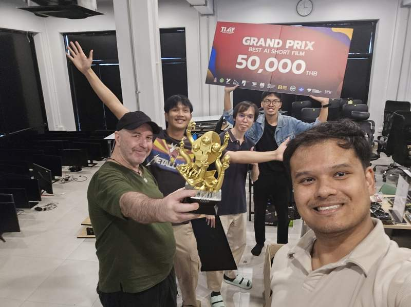
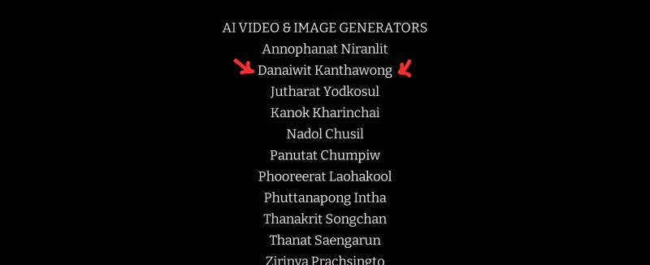
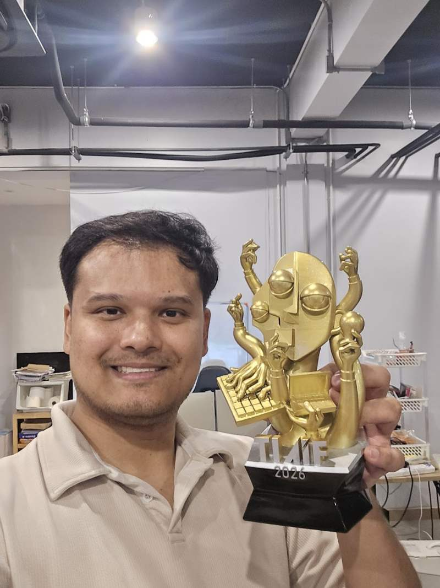
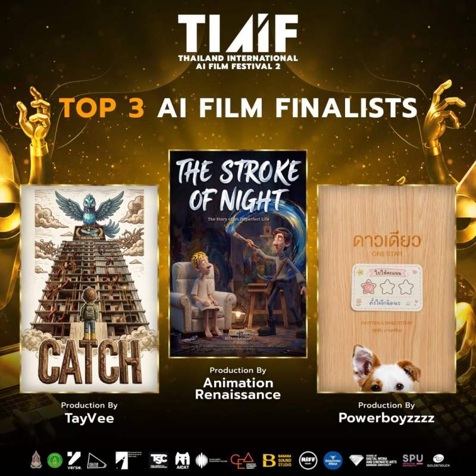
Creative media production through cinematic short films, showcasing narrative storytelling, mood & tone direction, and impactful message delivery to targeted audiences.
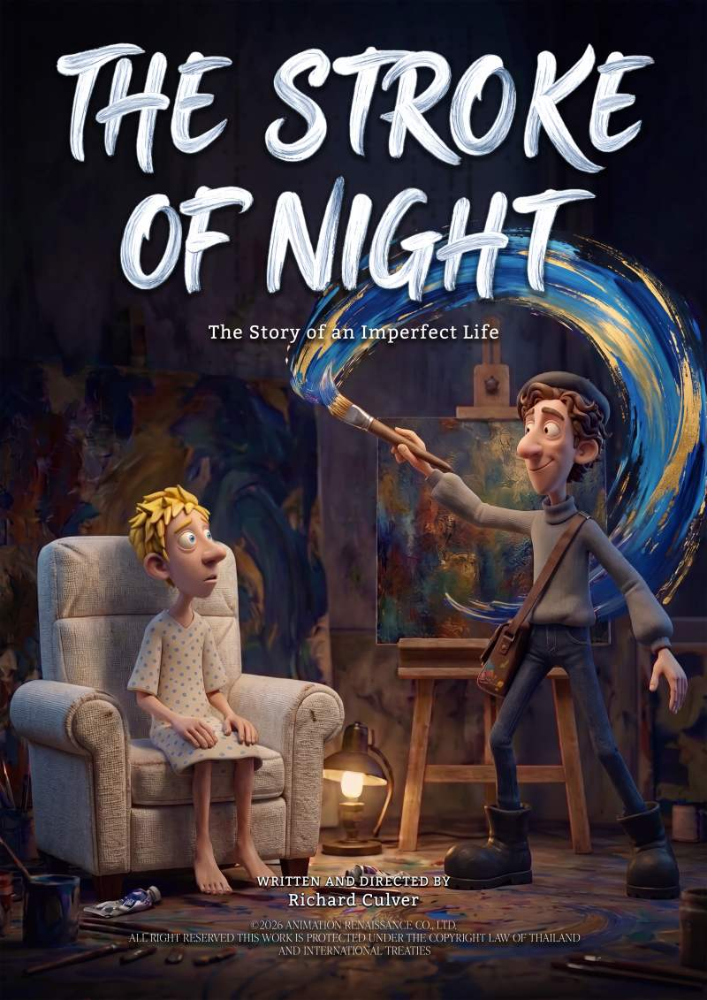
Click to Watch on YouTube
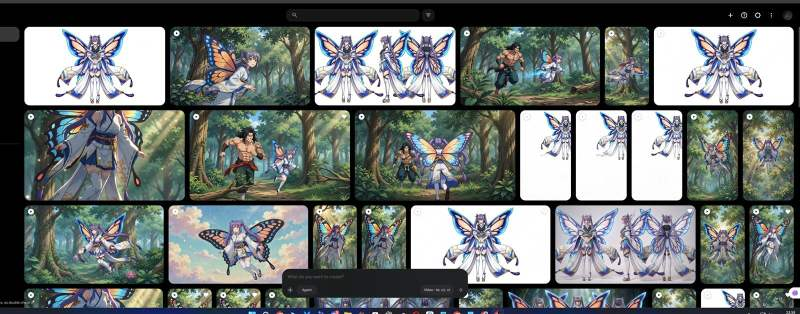
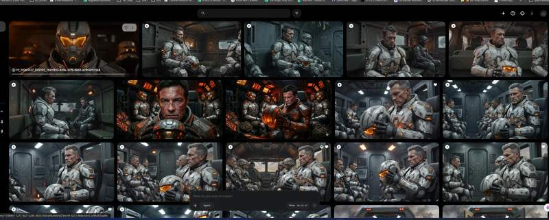
Interactive simulation project for surgical robotics (da Vinci systems). Responsible for high-precision 3D modeling and immersive Virtual Operating Room (OR) environments requiring microscopic anatomical accuracy.
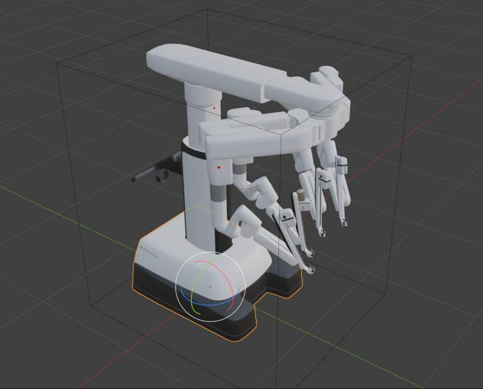
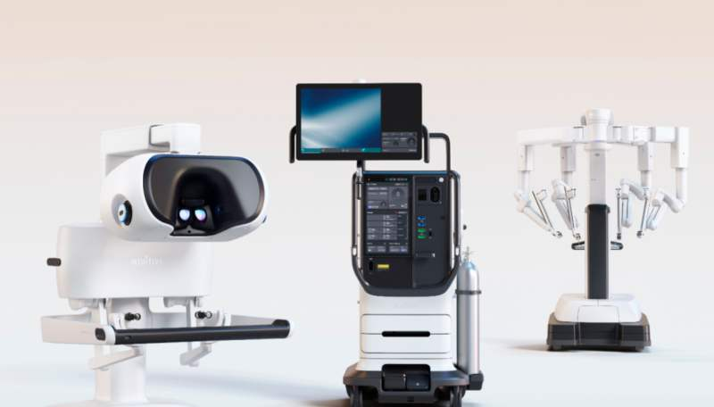
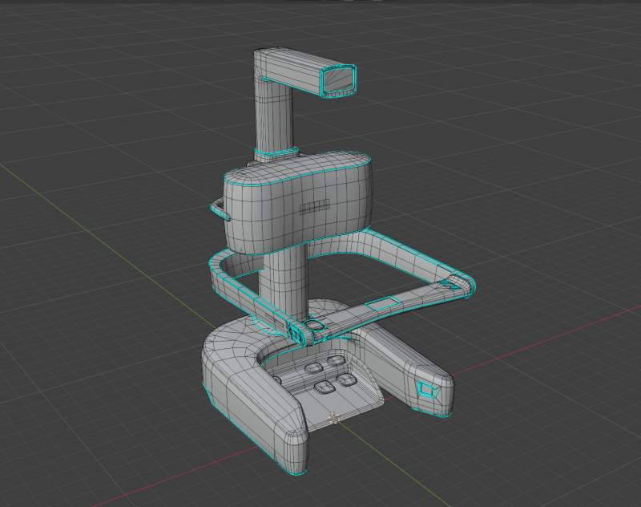
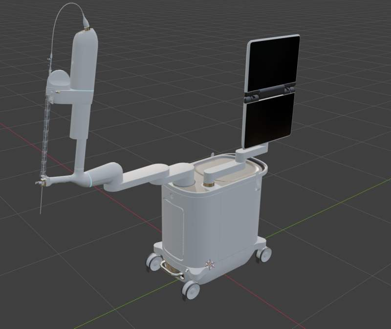
Detailed breakdown of 3D robotic components showing meticulous PBR texturing, lighting response, and polygon optimization for high-performance real-time engine rendering.
As founder of the page, led communication strategy and active community management to foster strong engagement with the Thai gaming audience.
PR & Communications Highlights:
- Managed social channels, broadcasting project milestones to 3,900+ active followers.
- Handled community feedback and crisis/issue resolution with speed and transparency.
- Authored engaging tutorials and visual installation guides for mod distributions.
- Integrated AI localization pipelines to deliver culturally resonant campaigns for Thai gamers.
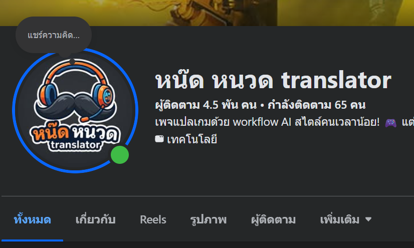